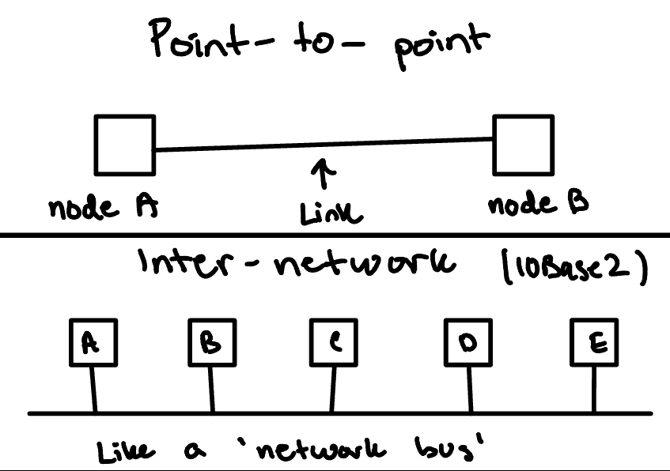
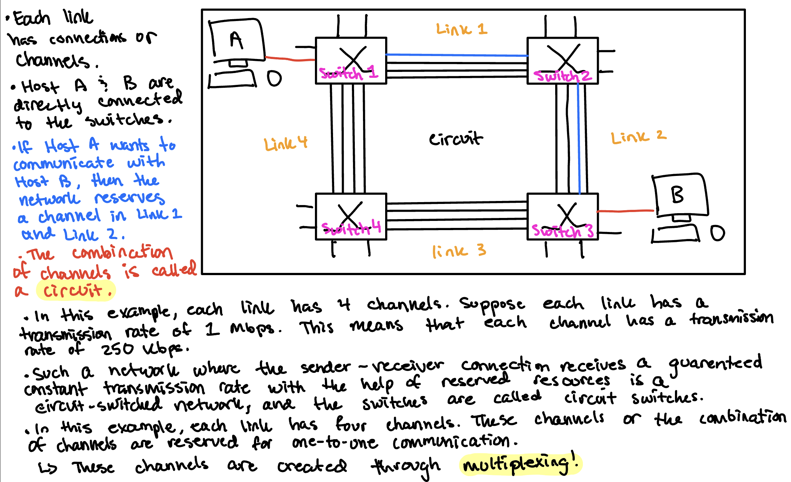
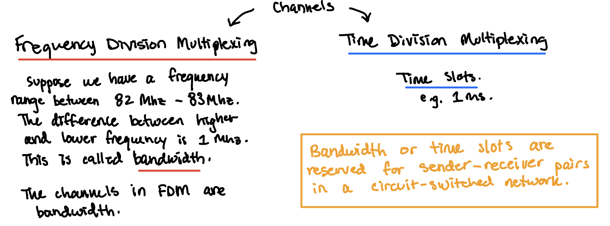
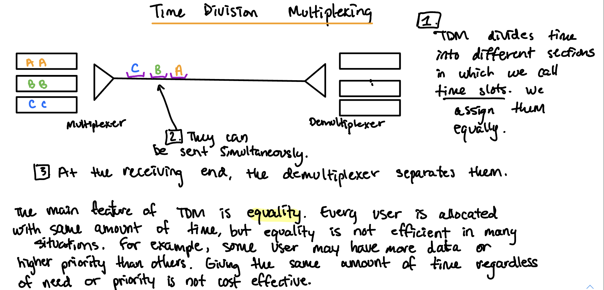
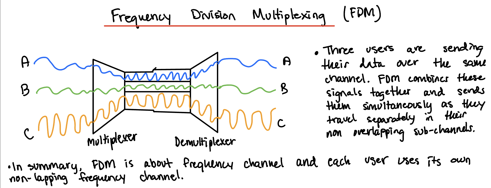
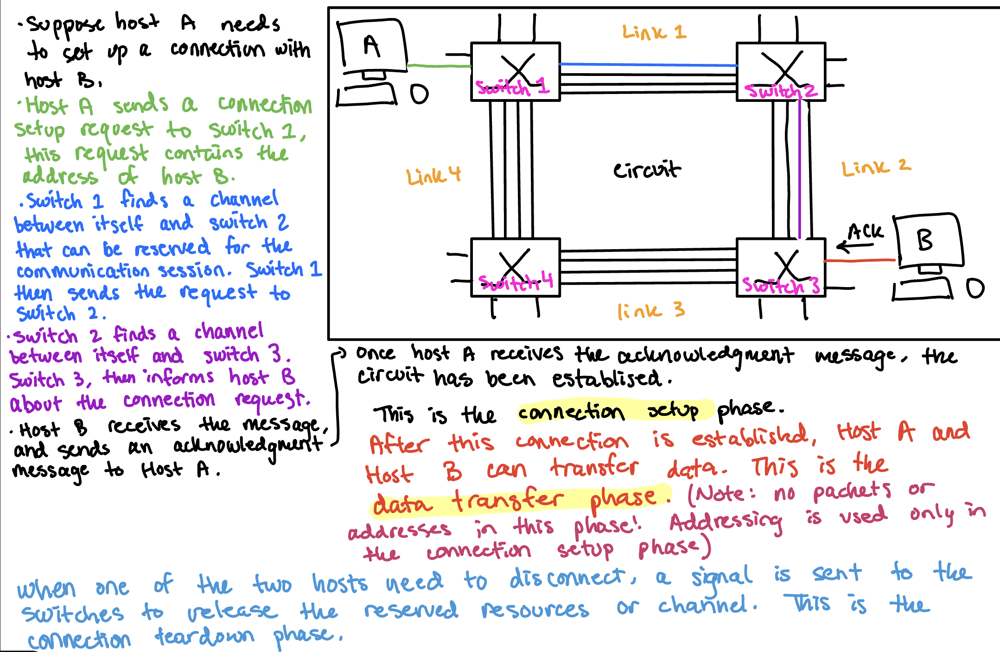
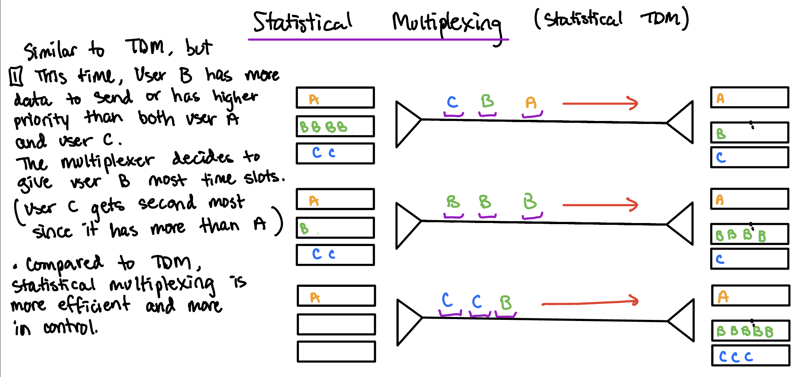
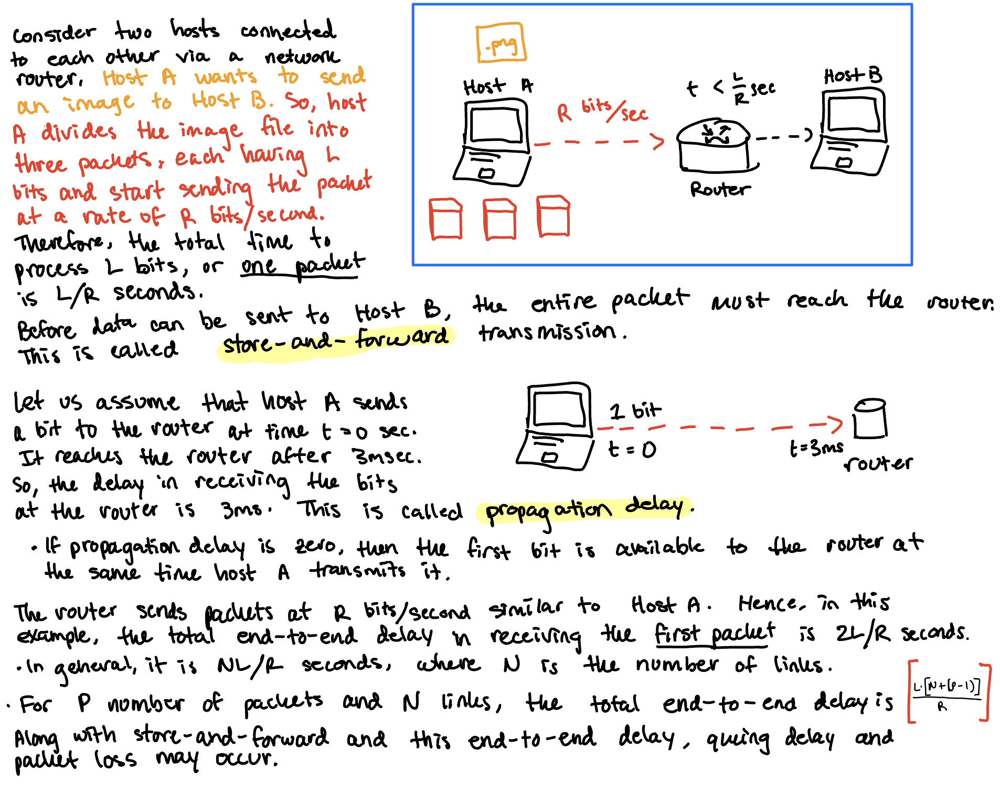
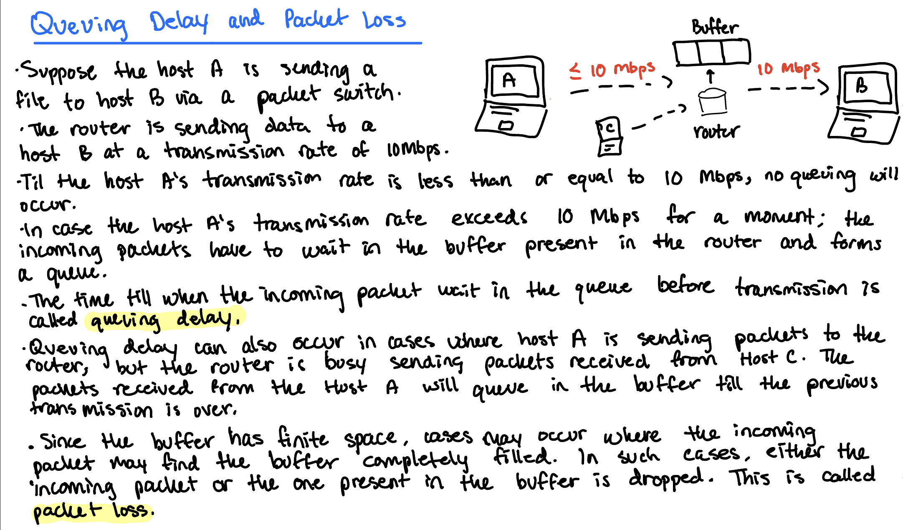

Understanding the basic concepts of Computer Networking
9/23/2022, ~2607 words, 10 images
Purpose: To explain the basic concepts of Computer Networking. I made this post to help myself understand the concepts to the point where I can explain the concepts to others. A lot of the information I pull into this post come from how I was instructed in my university.What is a network?
- Recursively, a network can be defined as two or more nodes connected by a link, or two or more networks connected by two or more nodes.
- Namely, we can just saw that a network is two or more computers or computing devices that are connected to share resources.
- Networks have many key features, including providing certain services like transporting goods, mail, information, or data. Sharing resources, meaning many people can be on a network at the same time - use it concurrently! The basic network building blocks are nodes, the active entities, which process and transfer goods and data, and links, the passive medium, which serve as the passive "carrier" of goods and data. A network is typically "multi-hop", meaning two-endpoints cannot directly reach each other. Need other nodes/entities to relay.
- Let's talk about the Internet building blocks
- Nodes, are PCs, special-purpose hardware. They are hosts, also referred to as end systems. Simply put, it is any physical device within a network that is able to send, receive, or forward information.
- Examples of nodes include your own personal computer, modems (modulator-demodulator for converting data), switches, servers, printers.
- These are devices that can connect over WiFi or Ethernet (and more...). A network consisting of three computers, a printer, and two other wireless devices has six total nodes.
- Nodes within a computer network must have some form of identification, like an IP address or MAC address in order for other network devices to recognize them.
- What does a network node do?
- "Network nodes are the physical pieces that make up a network. They usually include any device that both receives and then communicates information. But they might receive and store data, relay information elsewhere, or create and send data instead."
- "For example, a computer node might back up files online or send an email, but it can also stream videos and download other files. A network printer can receive print requests from other devices on the network, while a scanner can send images back to the computer. A router determines which data goes to whcih devices that request file downloads within a system, but it can also send requests out to the public Internet."
- Links are simply the connection between two nodes. Nodes can be connected through many ways including coax cable, optical fiber, wireless.
- Point-to-point or Multiple Access (Inter-network) 
- Physical Media
- Physical Link: Transmitted data bit propagates across link
- Guided Media: signals propagate in solid media: copper, fiber.
- Unguided Media: signals propagate freely, like radio.
- Coaxial Cable: Wire (signal carrier), within a wire (shield), used in baseband (single channel) and broadband (multiple channel).
- Twisted Pair (TP): two insulated copper wires. CAT3 and CAT5 used for Ethernet
- Fiber Optic Cable: Glass fiber carrying light pulses. It has high speeds and low error rate.
- Physical Media: Radio
- Signal carried in electromagnetic spectrum
- No 'physical' wire. It is bidirectional
- Obstruction by objects, interference.
- Types include: Microwave, LAN, WAN, Satellite...
- Nodes, are PCs, special-purpose hardware. They are hosts, also referred to as end systems. Simply put, it is any physical device within a network that is able to send, receive, or forward information.
- There are many types of networks
- LAN: Local Area Network, contained in one building or one room
- WAN: Wide Area Network, spans a larger geographical area
- MAN: Metropolitan Area Network, little larger than WAN
- CAN: Controller Area Network, typically for computer mechanical stuff, they can talk over a controller area network...
- PAN: Personal Area Network (like your phone and smartwatch communicating or your computer and a bluetooth device)
- How is this connected?
- Let's take a look at our smartphone for example. Our smartphone will most likely have 3 radios inside of it.
- Bluetooth radio: connects you to your smartwatch, or speaker, etc.
- WiFi radio: connects you to your ISP
- 4G/5G radio: connects you to Verizon (or whatever)
- Not only is your phone now in your pocket connected to a global network (Verizon), but it is connected to all sorts of other networks...
- Let's take a look at our smartphone for example. Our smartphone will most likely have 3 radios inside of it.

What are the issues in computer networking?
- Network is a shared resource: Provides services for many people at the same time. Carry bits/information for many people at the same time.
- Switching and multiplexing: How to share resources among multiple users, and transfer data from one node to another.
- Naming and addressing: How to find name/address of the party (or parties) you would like to communicate with. An address is a byte-string that identifies a node: unicast, multicast, and broadcast addresses.
- Routing and (end-to-end) forwarding: Routing is the process of determining how to send packets towards the destination based on its address.
What is the Internet? What's special about the Internet?
- To provide a more "nuts-and-bolts" view of the internet. It represents the "network of networks"... Interconnected ISPs. The Internet utilizes protocols for controlling, sending, and receiving messages through (TCP, IP, HTTP, Skype, etc.). To provide a more service view, the Internet is the infrastructure that provides services to applications: web, email, gaming, social networks.
- The Internet is based off the notion of packet switching. Enables statistical multiplexing, better utilization of network resources for transfer of 'bursty' data traffic.
- Internet key organizational/architectural principle: "smart" end systems + "dumb" networks.
Switching and Multiplexing
- A network is a shared resource that provides services to many people at the same time. It carries many bits/information for many people at the same time. Switching and multiplexing helps this get done.
- Switching determines how to deliver information from point A to point B.
- Multiplexing determines how to share resources among many users.
- Switching and multiplexing are closely related with one another.
What is switching?
- Two or more devices connect to form a network. In a network, the devices should be able to do one-to-one communication. For this, we can set up point-to-point connections among them via mesh topology or star topology. However, this becomes impractical when the number of computers increases.
- A solution to this problem is switching, where devices called switches, interlink to each other, are used to set up temporary point-to-point connections among the end systems. End systems connect directly to the switches.
Switching Strategies
- To reiterate, switching determines how to deliver information from point A to point B. More notably, from a node to another node.
- In computer networks, switching is a process to forward packets coming in from one port to a port leading towards the destination. When data comes on a port is called ingress, and when data leaves a port or goes out it is called egress. A communication system may include number of switches and nodes.
- Switching can be divided into two major categories
- Connectionless: The data is forwarded on behalf of forwarding tables. No previous handshaking is required and acknoledgements are optional.
- Connection oriented: Before switching data to be forwarded to destination, there is a need to pre-establish circuit along the path between both endpoints. Data is then forwarded on that circuit. After the transfer is complete, circuits can be kept for future use or can be turned down immediately.
- We can make conclusions to simply say that the purpose of switching is to provide communication from nodes. With this communication, we can create the services that make up the Internet and more.
Circuit Switching
- When two nodes communicate with each other over a dedicated communication path, it is called circuit switching. Applications that go through circuit switching may go through three phases: first establishing a circuit, then trasfering the data, then disconnecting the circuit.
- Network resources are "divided into pieces", pieces are allocated to calls. A resource pieces is idle if not used by owning call. This division is done through FDM, TDM, CDM.
- Under circuit switching, all the resources needed by a call are dedicated to that call for the duration of the call. This is used in telephone networks. The good thing about circuit switching is it's guarenteed service. You are assured of the required resources for the entire duration of the call. The bad thing is that resources are not utilized efficiently. There may be silent periods during the talk, but the dedicated network resources cannot be used by other calls. Whether you are shouting or silent you consume the same amount of network resources.
- What happens when the resource demands exceed the resources available? If we say there is only one circuit/link, let's say A is currently occupying the circuits between C-D, and D-E. Now suppose B wants to call E, then B is blocked. Once call is admitted, you are guarenteed to have good quality and service.
Circuit Switching explained
- How circuit switching works
- Suppose there is a restaurant that accepts reservation. We can make a reservation at this restaurant and then when we show up we can be immediately seated and place our order. Circuit switching is analogous to this restaurant. This means that resources are reserved for the communication session. 
- Circuit switching takes place at the physical layer.
Frequency Division Multiplexing (FDM) vs Time-Division Multiplexing (TDM)
- Multiplexing in networking means multiple signals are combined together and thus travel simultaneously on one link. The purpose of multiplexing is sharing. 
- TDM is transmitting different users' digital signals over one link by dividing time into slots or intervals and assigning them equally among these users.
-

- FDM deals with analog signals, not digital signals.
-

- When do we use TDM and FDM?
- We need to know about baseband and broadband. Baseband deals with digital signals. Baseband systems can only transmit one signal at a time. Digital signals occupy the enttire bandwidth which means baseband systme requires an exclusive use of the channel's capacity. TDM and Statistical Multiplexing is used in baseband.
- Broadband transmissions deal with analog signals, which are in form of optical waves. Broadband allows for multiple transmissions at the same time - they can share one channel by sharing different frequency range.
Communication in circuit-switched network
- Communication in a circuit-switched network involves three phases. The connection setup phase, the data transfer phase, and the connection teardown phase.
- Connection setup phase
- Data transfer phase
- Connection teardown phase

- Suppose a person is talking to his friend. After some time, both of them stop talking for 5 minutes. For these 5 minutes, the reserved resources are idle, and cannot be used by any other ongoing communication because they are reserved for their conversation only. Due to this reason, circuit-switched networks have low efficiency. However, the delay in this type of network is minimal because there is no waiting at the switches as the circuit is already set up before data transfer. The delay is only due to the time needed to set up the connection, transfer data, and terminating the circuit.
Packet Switching
- Communication between two nodes such that an entire message is broken down into smaller chunks called packets. The switching information is added in the header of each packet and transmitted independently.
- Each end-to-end "data stream" divided into packets. Users A and B packets share network resources. Each packet uses full link bandwidth. Resources used as needed.
- Resource Contention:
- Aggregate resource demand can exceed amount available
- Congestion: packets queue, wait for a link use.
- Store and forward: packets move one hop at a time.
- A node receives complete packet before forwarding.
- Packets may suffer delay or losses!
What is statistical multiplexing? Why is this important?
- Time division multiplexing, BUT on demand rather than fixed.
- Reschedule link on a per-packet basis.
- Packets from different sources interleaved on the link.
- Buffer packets that are contending for the link.
- Buffer buildup is called congestion.
- This is packet switching, used in computer networks.
- Statistical multiplexing analyzes statistics related to the workload, need or priority and determines on-the-fly how much time each user should get.
-

Packet Switching explained
- How packet switching works
- Suppose there is a restaurant that does NOT accept reservation. So when you arrive at the restaurant, you may have to wait in queues before you can be seated. This means that resources are not reserved in packet switching.
- Applications like Google Chrome, Skype, Outlook, that require Internet to function are called network applications.
- In a network application, the end system (or host) needs to send data to each other over the Internet. This data can be an image, audio, video or a text file. Instead of sending the whole file at once, it is divided into small data untis at the source and are called packets. These packets, then, move over a network of packet switches to reach the destination host.
- Packet switches can be routers or link-layer switches.
- This method of data transmission over a network of packet switches in the form of small data units or packets is called packet switching.  
- We have learned so far that in packet switching, the packet switches receive packets at one communication link and fowards it to another communication link. During this process, it may suffer store-and-forward delay, queuing delay, or packet loss. But how the packet switches know to whcih communication link the incoming packet should be forwarded? Here, forwarding tables come into the picture.
- On the Internet, every device has a unique address known as an IP address. When Host A sends a packet to Host B, it maintains the IP address of Host B in the packet header. Every router has a forwarding table. It maps the portion of the IP address or network address to the router's link interface. When a router receives a packet, it matches the prefix of the packet's destination address with the entires present in the table and forwards the packet to the corresponding outbound link.
- Forwarding tables are updated automatically with the helping of routing protocols.
- Packet switching occurs in the same way as a person used to go from one place to another if he does not know the route to the destination.
How do packet switching and circuit switching compare/differ?
- Packet switching allows more users to use network.
| Item | Circuit-switched | Packet-switched |
|---|---|---|
| Dedicated "copper" path | yes | no |
| Bandwidth available | fixed | dynamic |
| Potentially wasted bandwidth | yes | no (not really) |
| Store-and-foward transmission | no | yes |
| Each packet/bit always follows the same route | yes | no necessarily |
| Call setup | required | not needed |
| When can congestion occur | at setup time | on every packet |
| Effect of congestion | call blocking | queuing delay |
- Is packet switching always preferable? It depends.
- Ideally we want circuit switching type service with the efficiency of packet switching. Computer networks use packet switching.
- Packet switching is great for bursty data, resource sharing, simpler, no call setup required. However, we get excessive congestion through packet delay and packet loss. Protocols are needed for reliable data transfer and congestion control.